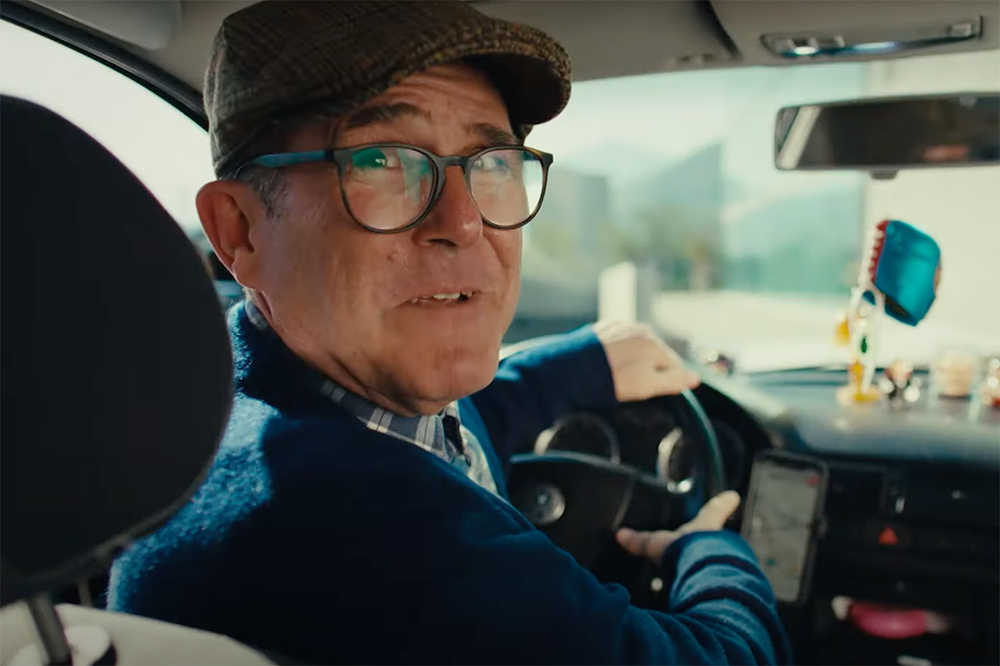
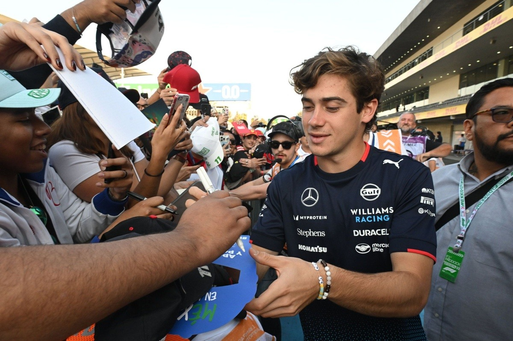

Comparini, Colapinto y la Humanización de las Marcas
Por Claudio Ramírez, socio de Consiglieri
Por Claudio Ramírez, socio de Consiglieri

A esta altura del partido, para nadie es un secreto que el concepto de marca ha evolucionado. En un entorno empresarial dinámico, líquido y cambiante, la necesaria evolución de las marcas se ha convertido en algo más que una simple tendencia; es una necesidad para la supervivencia y el éxito de cualquier desafío empresarial. Por ello, las compañías que logran adaptarse, reinventarse y mantenerse relevantes son las que continúan prosperando en un mercado cada vez más competitivo. Desde gigantes icónicos hasta disruptores de la industria, abundan los ejemplos que demuestran el poder de abrazar el cambio y evolucionar con los tiempos.
Hoy en día, una marca es mucho más que un logo, producto o servicio; representa la esencia, los valores y el propósito de una empresa hacia sus clientes, tanto actuales como potenciales. Es la conexión emocional y la percepción que los consumidores tienen de una compañía y su propuesta de valor. La marca abarca desde elementos visuales, como el logo y los colores, hasta su relato, voz y mensajes. En un mundo hiperconectado e infoxicado, donde los consumidores están abrumados de opciones, una marca fuerte y diferenciada es crucial para atraer y retener clientes.
En este contexto, la reputación corporativa se ha vuelto un activo estratégico esencial. La coherencia entre las acciones y la narrativa de la marca puede fortalecer o, si se contradicen, dañar esa reputación. Aquí es donde las figuras públicas asociadas a las marcas juegan un rol clave: al reflejar los valores centrales de la marca, ayudan a consolidar la conexión emocional con la audiencia. Por ello, la elección de estas figuras no es aleatoria, sino estratégica, respondiendo tanto a la escala global como a las especificidades locales del mercado.
Colapinto y Comparini en acciónFranco Colapinto, la joven promesa argentina en la Fórmula 1, ha capturado la atención global no solo por su talento en la pista, sino también por su capacidad de conectar emocionalmente con el público, encarnando valores de humildad y resiliencia. En un mercado global y competitivo, Colapinto se presenta como un aliado estratégico ideal para las marcas que desean transmitir valores universales de autenticidad. Por otro lado, en el ámbito local, Marcelo Comparini —rostro de ComparaOnline— ha utilizado su humor y estilo cercano para consolidarse como una figura confiable, ideal para conectar con el público chileno de manera auténtica y accesible.

El fin de las distancias: Un modelo de cercanía genuina
En la actualidad, la relación entre empresas y usuarios ha evolucionado: la figura de la empresa como el “rey sol”, en torno al cual orbitan los stakeholders, se ha desvanecido. En el entorno actual, marcado por la pandemia, el estallido social, el recrudecimiento de las demandas ciudadanas y la crisis económica, las empresas se ven obligadas a transformarse en un actor más dentro de un ecosistema interactivo. En este ecosistema, todos los participantes —clientes, usuarios, colaboradores(as), comunidades y otros actores— conforman un círculo de colaboración y diálogo continuo. Este cambio, impulsado tanto por las circunstancias como por una demanda de mayor transparencia, exige que las empresas interactúen de forma cercana y auténtica, funcionando como un stakeholder más que dialoga y se expone en un ejercicio libre, abierto y, sí, arriesgado.
Las campañas y esfuerzos digitales en plataformas como Instagram, TikTok y medios online son vitales para esta conexión. Las marcas ya no solo lanzan mensajes; interactúan, se exponen a comentarios y participan en tiempo real. Gracias a estas plataformas, las empresas cuentan con métricas que permiten medir su efectividad y ajustar sus estrategias con precisión, asegurando que llegan a las audiencias correctas y relevantes. Pero este modelo implica una valentía renovada, pues las marcas se exponen a críticas, opiniones y conversaciones en tiempo real. Es un proceso que exige mayor simplicidad, autenticidad y transparencia, sin rodeos ni letra chica, para poder dirigirse a ciudadanos y ciudadanas que hoy valoran su capacidad de comparar y escoger en base a intereses, preferencias y afinidades personales.
Los usuarios(as) actuales ya no creen en promesas de marca que parecen distantes o desconectadas de la realidad. Desconfían de rostros inalcanzables, figuras casi divinas que, desde un Olimpo irreal, buscan imponer su mensaje. En su lugar, las audiencias prefieren caras reales, personas accesibles que representan una marca en la cual pueden confiar, interactuar y con la que se sienten, de uno u otro modo, identificadas.
Redefinición de marca: Más allá de lo superficial
La evolución de marca debe ser entendida como un proceso estratégico e intencional de transformarla para adaptarse a las dinámicas del mercado, los comportamientos de los consumidores y las tendencias sociales. A medida que el entorno empresarial se transforma, las empresas deben evolucionar con este para seguir siendo relevantes y competitivas. La evolución de marca va más allá de cambios cosméticos; implica redefinir el propósito, los valores y el posicionamiento de la marca en respuesta a las necesidades y expectativas en constante cambio de los consumidores.
Evolucionar no significa abandonar la herencia de una marca o alterar completamente su identidad. Se trata de encontrar el equilibrio, de por sí delicado, entre preservar la esencia de la marca y, a la vez, innovar para responder a las demandas actuales. Este equilibrio garantiza que los clientes leales mantengan su conexión con la marca, mientras se atrae a nuevas audiencias.
Complementariedad en lo local y global: Dos estrategias de conexión emocional
En este escenario, la participación de Franco Colapinto en la Fórmula 1 aporta una proyección internacional de alta relevancia, prestigio e influencia, lo cual refuerza su imagen y su impacto en mercados globales. La llegada de Colapinto a un equipo ícono como Williams no solo ha revitalizado la imagen de la escudería, sino que también ha catapultado al país vecino al centro del escenario automovilístico internacional, brindando a las marcas una oportunidad de alinearse con una narrativa de dedicación y esfuerzo que resuena globalmente. Colapinto, al igual que las marcas que se asocian con él, trae a la pista una combinación de innovación y valores humanos que conecta profundamente con las audiencias de mercados emergentes, generando lealtad y compromiso, y de mercados consolidados que valoran el volver a lo esencial.
Por su parte, Marcelo Comparini aporta a ComparaOnline, y, por qué no decirlo, al sector asegurador chileno, una conexión directa y auténtica con el consumidor local. La campaña “Comparini Compara” no es solo una pieza publicitaria; se ha convertido en una muestra de cómo la cercanía y la credibilidad de un comunicador pueden transformar un mensaje en una herramienta educativa que empodera al consumidor. Con una comunicación que refuerza la importancia de tomar decisiones informadas, el animador encarna los valores de transparencia y confianza que son esenciales para una insurtech en crecimiento en un mercado altamente competitivo.

Humanización de las marcas: Un balance entre sofisticación y simplicidad
Así, la Fórmula 1, símbolo de innovación y perfección técnica, está encontrando en Franco Colapinto un rostro humano que redefine las narrativas en torno al deporte: su historia de esfuerzo y superación resuena con audiencias que buscan una conexión emocional auténtica, incluso en el mundo de la alta tecnología. Para las marcas, la historia de Colapinto representa una plataforma para proyectar autenticidad y valores humanos a escala global, equilibrando la sofisticación técnica con la cercanía.
Simultáneamente, la campaña que tiene como protagonista a Marcelo Comparini encuentra en él un embajador de estos valores similares a nivel local. Comparini no solo personifica la confianza y la cercanía, sino que su participación en el proceso creativo de “Comparini Compara” refleja una colaboración profunda y significativa que ha dado como resultado una narrativa educativa y memorable. Al elegir a Comparini como rostro, ComparaOnline no solo gana visibilidad, sino que también consolida su reputación como una empresa que promueve la transparencia y la responsabilidad en las decisiones de sus usuarios.
Proyección y reputación: Marcas que inspiran confianza en todos los contextos
El éxito de Franco Colapinto en el ámbito internacional ha posicionado la sencillez y lo cotidiano en un nuevo revival de humanidad. Por ello, las marcas globales que se asocian con él encuentran en esta narrativa una oportunidad única de conectar con audiencias globales. Su historia inspira confianza y autenticidad, valores esenciales para cualquier marca que desee fortalecer su reputación en un mercado cada vez más consciente y exigente.
Por su parte, a nivel local, la inclusión de Comparini en la campaña refleja una narrativa que va más allá de la publicidad convencional. En un entorno donde las decisiones financieras pueden ser complejas, Comparini facilita una conexión real con el consumidor, promoviendo decisiones informadas y transparentes que humanizan a ComparaOnline. Esta estrategia no solo refuerza la imagen de la insurtech como referente en transparencia en el mercado asegurador, sino que además crea una conexión emocional duradera con su público.
Estrategias de adaptación cultural en la humanización de marcas
La alianza con figuras como Colapinto y Comparini demuestra que, en la actualidad, las marcas no solo deben proyectar valores humanos, sino también adaptarse de manera ágil y auténtica a los contextos culturales de sus audiencias. En un mundo de consumidores cada vez más diversos y exigentes, el éxito de una campaña dependerá de su capacidad de hablar el idioma de sus mercados y de resonar tanto a nivel local como global.
Así, al asociarse con rostros que representan diferentes facetas de autenticidad, las marcas logran una conexión genuina, construyendo una reputación sólida y creíble, que evoluciona con las expectativas culturales de cada audiencia.

Realidad sobre humo
Con todo, hoy los consumidores valoran la realidad por encima de las apariencias, la coherencia más allá de las promesas, y buscan en las marcas no solo un producto o servicio, sino una voz que los represente, escuche y dialogue con ellos y por ellos.
Por ello, la auténtica fortaleza de una marca reside en su capacidad para empatizar genuinamente con las emociones, valores y realidades de sus audiencias. Colapinto y Comparini, desde distintos ángulos y escenarios, nos recuerdan que la confianza y la lealtad no se compran con estrategias vacías o imágenes prefabricadas; se construyen con una conexión auténtica, basada en historias reales y un compromiso visible con lo humano.
En un mundo donde las marcas deben trascender la simple venta, quienes eligen escuchar, adaptar y representar genuinamente a sus audiencias se sitúan un paso adelante, no solo por su innovación, sino por su capacidad de inspirar y generar comunidad.
En un mercado competitivo y desafiante, saturado de propuestas y mensajes fugaces, solo las marcas que apuestan por la cercanía y la autenticidad lograrán verdaderamente permanecer. Serán ellas las únicas capaces de generar un impacto profundo y duradero en la vida de sus consumidores y demás públicos. Todo lo demás es, simplemente, humo.
 Actualidad
ActualidadEl recordado programa noventero “Venga Conmigo” marcó a toda una generación en Chile. Su exitoso segmento “Corazones Service” se transformó…
 Actualidad
ActualidadHace aproximadamente 2 meses comenzamos con el cierre de lo que empezó en julio como el “Compariniverse”.
 Actualidad
ActualidadHace unos meses lanzamos Compariniverse: la primera campaña en Chile protagonizada por una celebridad completamente clonada con IA.